Initial Inspection and Diagnostic Overview
Basic Troubleshooting
Basic Troubleshooting Guide
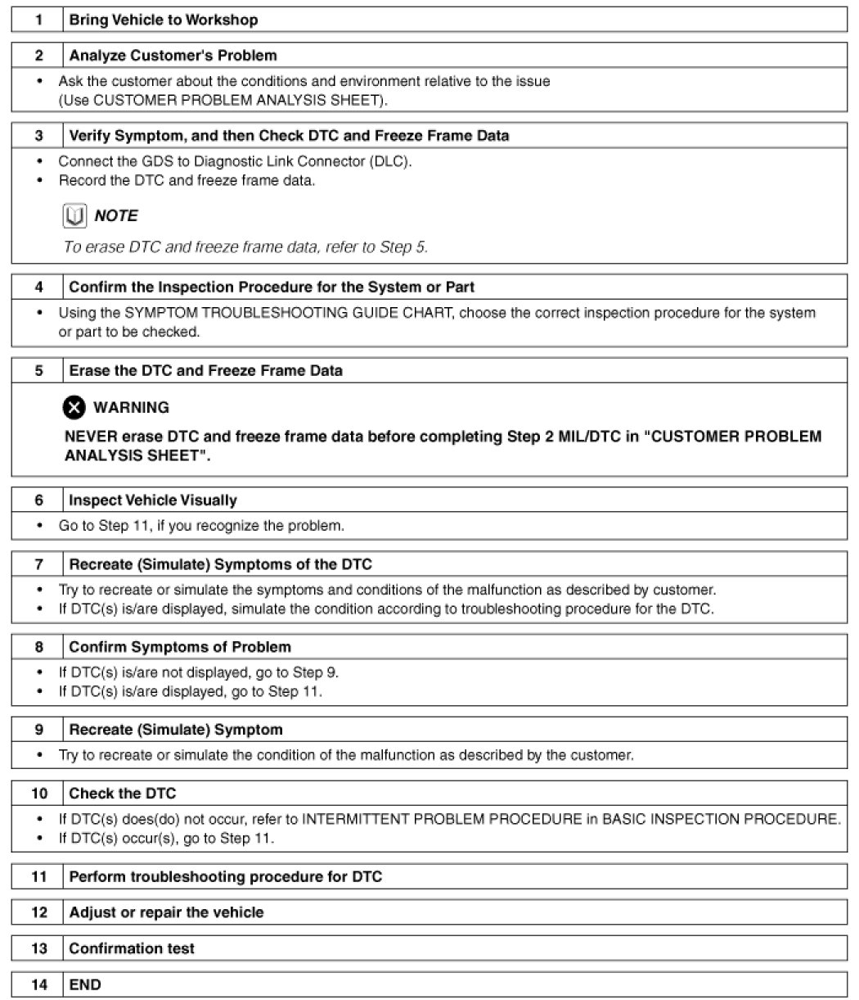
Customer Problem Analysis Sheet
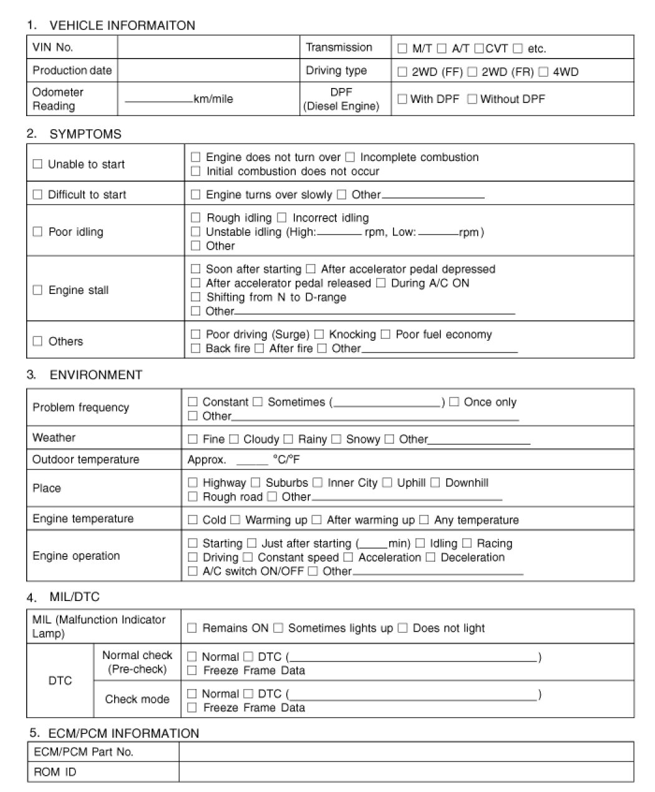
Basic Inspection Procedure
Measuring Condition of Electronic Parts' Resistance
The measured resistance at high temperature after vehicle running may be high or low. So all resistance must be measured at ambient temperature (20°C, 68°F), unless stated otherwise.
NOTE:
The measured resistance in except for ambient temperature (20°C, 68°F) is reference value.
Intermittent Problem Inspection Procedure
Sometimes the most difficult case in troubleshooting is when a problem symptom occurs but does not occur again during testing. An example would be if a problem appears only when the vehicle is cold but has not appeared when warm. In this case, the technician should thoroughly make out a "Customer Problem Analysis Sheet" and recreate (simulate) the environment and condition which occurred when the vehicle was having the issue.
1. Clear Diagnostic Trouble Code (DTC).
2. Inspect connector connection, and check terminal for poor connections, loose wires, bent, broken or corroded pins, and then verify that the connectors are always securely fastened.
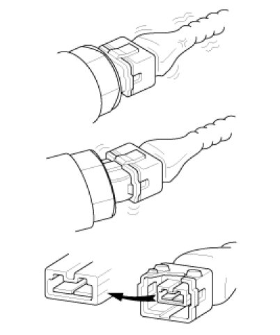
3. Slightly shake the connector and wiring harness vertically and horizontally.
4. Repair or replace the component that has a problem.
5. Verify that the problem has disappeared with the road test.
Simulating Vibration
1) Sensors and Actuators
: Slightly vibrate sensors, actuators or relays with finger.
WARNING:
Strong vibration may break sensors, actuators or relays
2) Connectors and Harness
: Lightly shake the connector and wiring harness vertically and then horizontally.
Simulating Heat
1) Heat components suspected of causing the malfunction with a hair dryer or other heat source.
WARNING:
- DO NOT heat components to the point where they may be damaged.
- DO NOT heat the ECM directly.
Simulating Water Sprinkling
1) Sprinkle water onto vehicle to simulate a rainy day or a high humidity condition.
WARNING:
DO NOT sprinkle water directly into the engine compartment or electronic components.
Simulating Electrical Load
1) Turn on all electrical systems to simulate excessive electrical loads (Radios, fans, lights, rear window defogger, etc.).
Connector Inspection Procedure
1. Handling of Connector
A. Never pull on the wiring harness when disconnecting connectors.
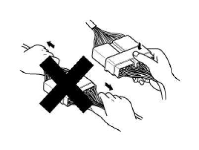
B. When removing the connector with a lock, press or pull locking lever.
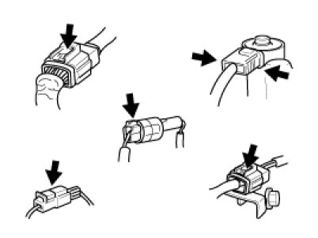
C. Listen for a click when locking connectors. This sound indicates that they are securely locked.
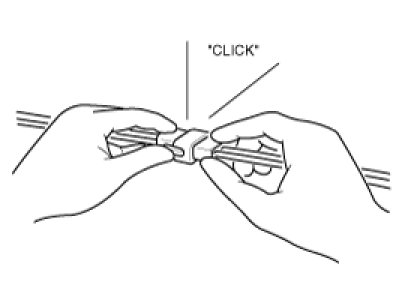
D. When a tester is used to check for continuity, or to measure voltage, always insert tester probe from wire harness side.
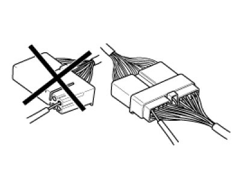
E. Check waterproof connector terminals from the connector side. Waterproof connectors cannot be accessed from harness side.
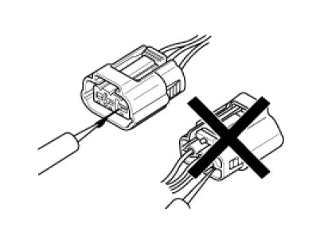
NOTE:
- Use a fine wire to prevent damage to the terminal.
- Do not damage the terminal when inserting the tester lead.
2. Checking Point for Connector
A. While the connector is connected:
Hold the connector, check connecting condition and locking efficiency.
B. When the connector is disconnected:
Check missed terminal, crimped terminal or broken core wire by slightly pulling the wire harness.
Visually check for rust, contamination, deformation and bend.
C. Check terminal tightening condition:
Insert a spare male terminal into a female terminal, and then check terminal tightening conditions.
D. Pull lightly on individual wires to ensure that each wire is secured in the terminal.
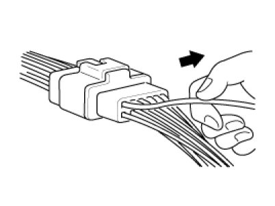
3. Repair Method of Connector Terminal
A. Clean the contact points using air gun and/or shop rag.
NOTE:
Never use sand paper when polishing the contact points, otherwise the contact point may be damaged.
B. In case of abnormal contact pressure, replace the female terminal.
Wire Harness Inspection Procedure
1. Before removing the wire harness, check the wire harness position and crimping in order to restore it correctly.
2. Check whether the wire harness is twisted, pulled or loosened.
3. Check whether the temperature of the wire harness is abnormally high.
4. Check whether the wire harness is rotating, moving or vibrating against the sharp edge of a part.
5. Check the connection between the wire harness and any installed part.
6. If the covering of wire harness is damaged; secure, repair or replace the harness.
Electrical Circuit Inspection Procedure
X Check Open Circuit
1. Procedures for Open Circuit
A. Continuity Check
B. Voltage Check
If an open circuit occurs (as seen in [FIG. 1]), it can be found by performing Step 2 (Continuity Check Method) or Step 3 (Voltage Check Method) as shown below.
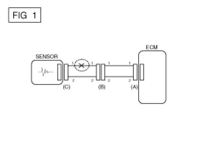
2. Continuity Check Method
NOTE:
When measuring for resistance, lightly shake the wire harness above and below or from side to side.
Specification (Resistance)
1Ohms or less -> Normal Circuit
1MOhms or Higher -> Open Circuit
A. Disconnect connectors (A), (C) and measure resistance between connector (A) and (C) as shown in [FIG. 2].
In [FIG.2.] the measured resistance of line 1 and 2 is higher than 1MOhms and below 1 Ohms respectively. Specifically the open circuit is line 1 (Line 2 is normal). To find exact break point, check sub line of line 1 as described in next step.
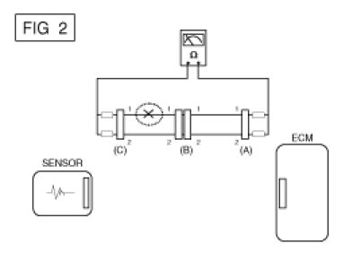
B. Disconnect connector (B), and measure for resistance between connector (C) and (B1) and between (B2) and (A) as shown in [FIG. 3].
In this case the measured resistance between connector (C) and (B1) is higher than 1MOhms and the open circuit is between terminal 1 of connector (C) and terminal 1 of connector (B1).
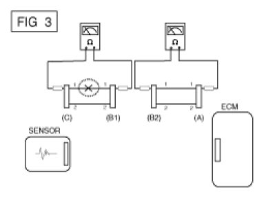
3. Voltage Check Method
A. With each connector still connected, measure the voltage between the chassis ground and terminal 1 of each connectors (A), (B) and (C) as shown in [FIG. 4].
The measured voltage of each connector is 5V, 5V and 0V respectively. So the open circuit is between connector (C) and (B).
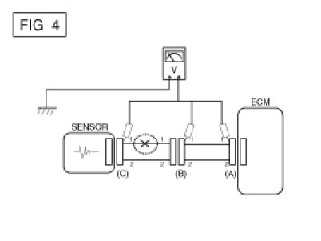
Check Short Circuit
1. Test Method for Short to Ground Circuit
A. Continuity Check with Chassis Ground
If short to ground circuit occurs as shown in [FIG. 5], the broken point can be found by performing Step 2 (Continuity Check Method with Chassis Ground) as shown below.
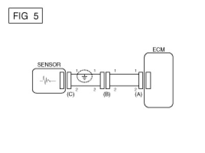
2. Continuity Check Method (with Chassis Ground)
NOTE:
Lightly shake the wire harness above and below, or from side to side when measuring the resistance.
Specification (Resistance)
1Ohms or less -> Short to Ground Circuit
1MOhms or Higher -> Normal Circuit
A. Disconnect connectors (A), (C) and measure for resistance between connector (A) and Chassis Ground as shown in [FIG. 6].
The measured resistance of line 1 and 2 in this example is below 1 Ohms and higher than 1MOhms respectively. Specifically the short to ground circuit is line 1 (Line 2 is normal). To find exact broken point, check the sub line of line 1 as described in the following step.
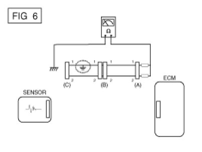
B. Disconnect connector (B), and measure the resistance between connector (A) and chassis ground, and between (B1) and chassis ground as shown in [FIG. 7].
The measured resistance between connector (B1) and chassis ground is 1Ohms or less. The short to ground circuit is between terminal 1 of connector (C) and terminal 1 of connector (B1).
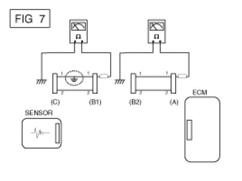
Testing For Voltage Drop
This test checks for voltage drop along a wire, or through a connection or switch.
1) Connect the positive lead of a voltmeter to the end of the wire (or to the side of the connector or switch) closest to the battery.
2) Connect the negative lead to the other end of the wire. (or the other side of the connector or switch)
3) Operate the circuit.
4) The voltmeter will show the difference in voltage between the two points. A difference, or drop of more than 0.1 volts (50mV in 5V circuits), may indicate a problem. Check the circuit for loose or dirty connections.
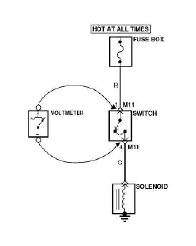
Symptom Troubleshooting Guide Chart
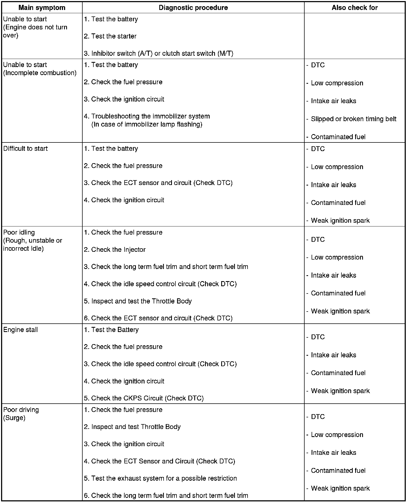
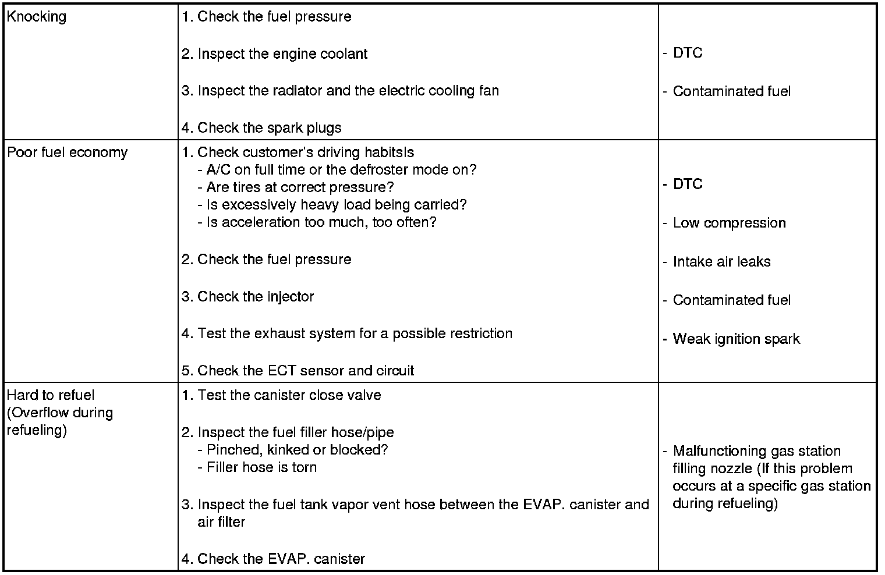